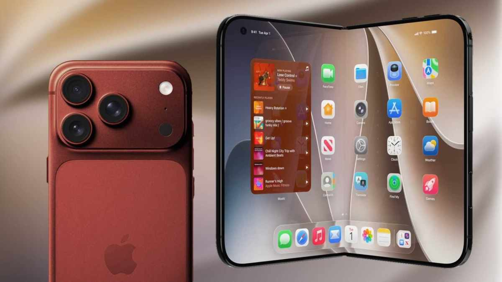

iPhone Ultra et iPhone 18 Pro : nouveautés, design, date de sortie, prix… Toutes les infos sur les smartphones Apple

🛒 En lien avec cet article
Publicité — Liens de partenariat Amazon : une commission peut être reversée, sans surcoût pour vous.
🔥 Top produits tech du moment
🛒 Voir le prix : Epson Ink/604 Pineapple C13T10G64010 Multipack
Publicité — Liens de partenariat Amazon : une commission peut être reversée, sans surcoût pour vous.
L'intelligence artificielle continue de transformer en profondeur notre quotidien et l'économie. Cette annonce s'inscrit dans une dynamique où les grands acteurs accélèrent leurs investissements et leurs lancements.
Ce qu'il faut retenir
Neuf ans après l'iPhone X, Apple devrait annoncer son smartphone le plus ambitieux de la décennie en 2026 : l'iPhone Fold (qui pourrait s'appeler iPhone Ultra).
Un smartphone pliant qui devrait être accompagné de l'iPhone 18 Pro et de l'iPhone 18 Pro Max, deux smartphones surpuissants avec des innovations en photo et une puce gravée en 2 nm.
Numerama fait un point sur les rumeurs.
Pourquoi c'est important
Cette information marque une nouvelle étape dans le développement de l'intelligence artificielle. Elle concerne directement les utilisateurs de technologies numériques et mérite d'être suivie de près dans les prochaines semaines. iPhone Ultra et iPhone 18 Pro : nouveautés, design, date de sortie, prix… Toutes les infos sur les smartphones Apple est ainsi un signal à prendre en compte pour comprendre les évolutions du secteur.
En résumé
Retenez l'essentiel : iPhone Ultra et iPhone 18 Pro : nouveautés, design, date de sortie, prix… Toutes les infos sur les smartphones Apple. Cette actualité a été rapportée par Numerama. Nous continuerons de suivre ce sujet et de vous tenir informés des prochaines évolutions.
Source : Numerama